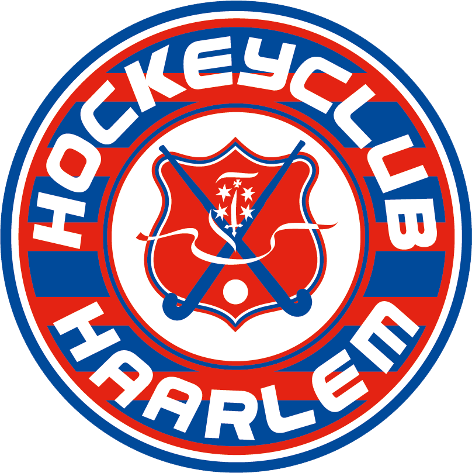
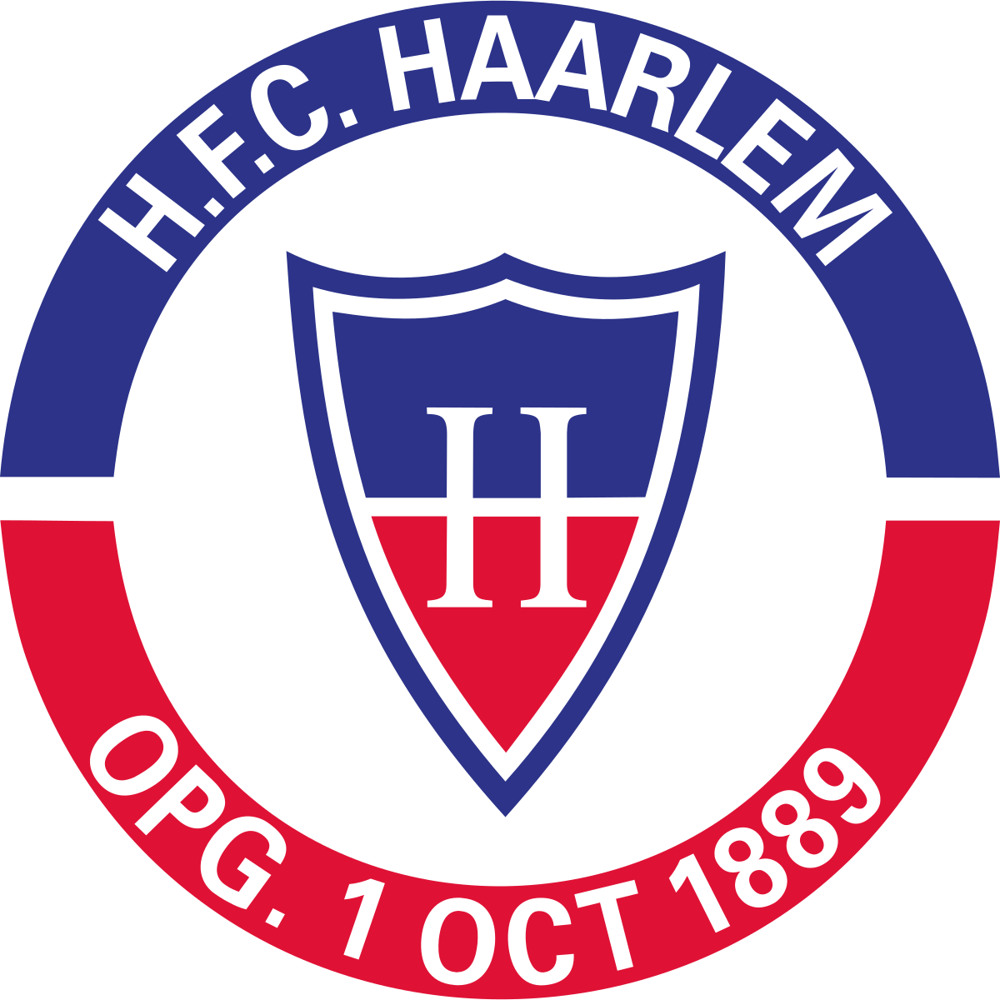
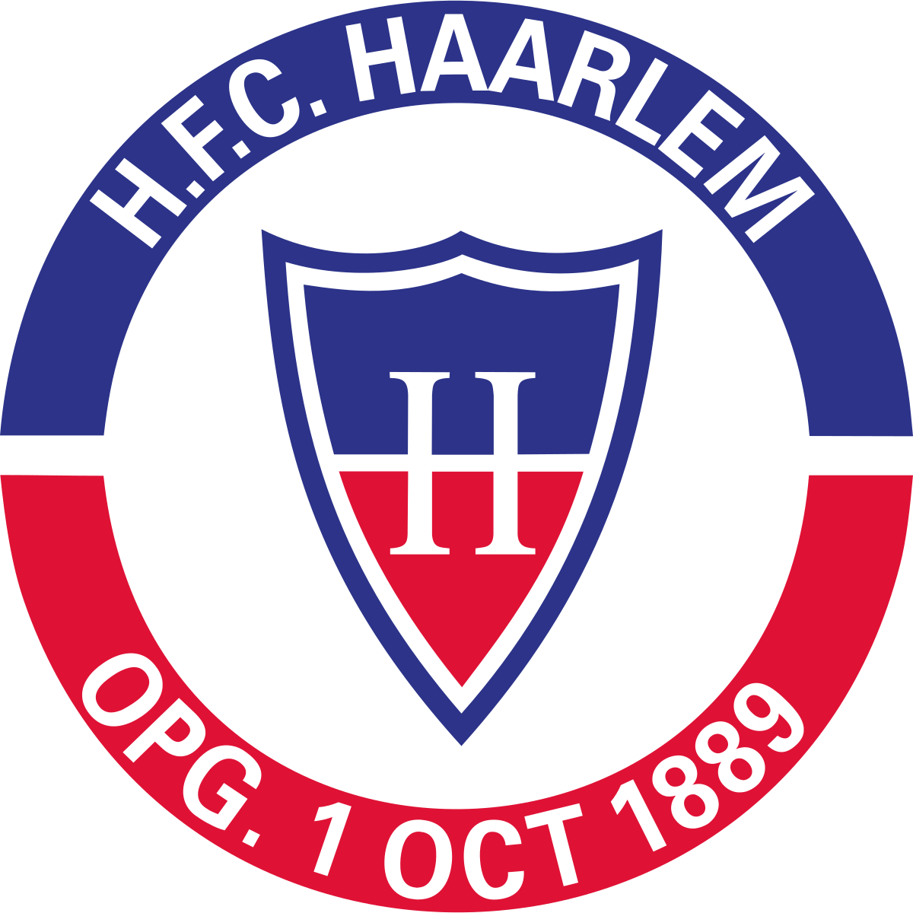

Neighborhood Haarlem Noord

Haarlem Noord
Haarlem-Noord is a city district of the Dutch municipality of Haarlem with more than 56,000 inhabitants. Until 1927, the area was for the most part part of the former municipality of Schoten. The area just north of Haarlem station had already been annexed in 1884. Here, the Frans Halsbuurt and Kleverparkbuurt were quickly built. Construction of the Ripperdakazerne was started in 1882. After the annexation of Schoten, the former municipality is almost completely built up within 25 years. There are often single-family homes from the 30s, 40s and 50s of the 20th century. The Rijksstraatweg goes in the middle of Haarlem-Noord towards Velsen. Parallel to the Rijksstraatweg is the Cronjéstraat shopping street at the start of the district. To the west, Haarlem-Noord is bounded by the Westelijke Randweg, east by the Vondelweg and Spaarndamseweg. The city district has three important bus stops; Julianapark, Minahassastraat and Delftplein / Spaarne Gasthuis.
Shoping night
There are some important sports facilities in Haarlem-Noord. Hockey club Haarlem, the baseball and softball club Sparks Haarlem and baseball club Kinheim are located there. Previously, football club HFC Haarlem also had its stadium. The Pim Mulier Stadium and the partially covered artificial ice rink are located on the western edge of the city district. In the district is also the smallest zoo in the Netherlands: Artisklas Haarlem.

Sport
There are some important sports facilities in Haarlem-Noord. Hockey Club Haarlem , the baseball and softball club Sparks Haarlem Softball club Sparks Haarlem and baseball club Kinheim are located there. Previously, football club HFC Haarlem also had its stadium. The Pim Mulier Stadium and the partially covered artificial ice rink are located on the western edge of the city district. In the district is also the smallest zoo in the Netherlands: Artisklas Haarlem.
 

Sport in Haarlem Noord
There are manye places where you can sport in Haarlem Noord neighborhood. Here is a list of them.

1- BASIC FIT is a chain of gyms. Basic-Fit will have 752 gyms in Europe in November 2019. These are spread over the Netherlands, Belgium, Luxembourg, France and Spain.

2- KENAMJU is a Dutch sports club. Originally it was a judo club, but nowadays karate and jiu-jitsu are practiced as well as judo.

3- Cardio Fintess Noord click on the name to go to the Cardio Fitnes Noord for more info
4- Fit For Free
Taekwondo
Taekwondo is originally a Korean martial art, where both hand and foot techniques are used. The literal translation of the word Taekwondo is: "The way of the foot and the fist". The word Taekwondo is made up of 3 parts: Tae (foot). The foot represents all leg techniques such as kicking and jumping. Kwon (fist). The hand stands for all hand and arm techniques such as bumps, blocks, gripping, clamping and throwing. Do (the way). The road is the path that you follow while practicing Taekwondo and mainly represents the mental part.